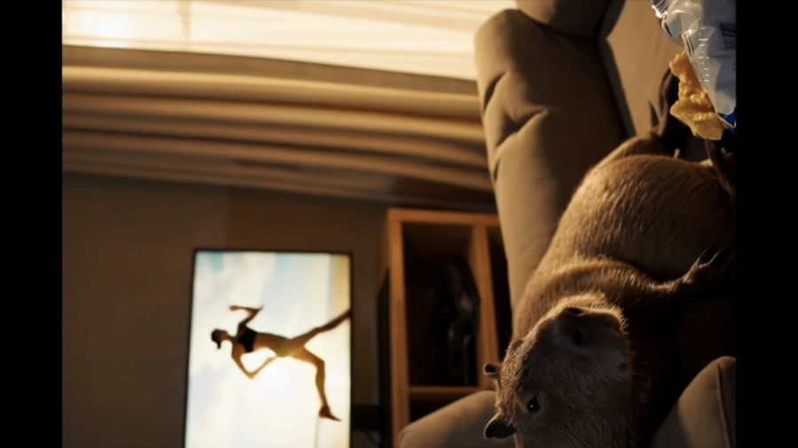

Mascot stories
A space for warm, funny, and everyday stories.
DEEPER WAVES
Wholesome mascot stories, humor, and everyday moments.
A space for warm, funny, and everyday stories.

A small mascot world with a big imagination. Workout scenes, CAPYBRI, and Indy Capy Eurotrip are part of its creative archive. This first look keeps a frame from the original workout clip; the longer films are still being prepared for this shelf.